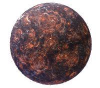
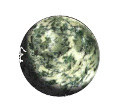
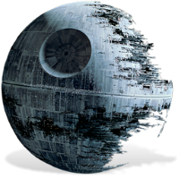
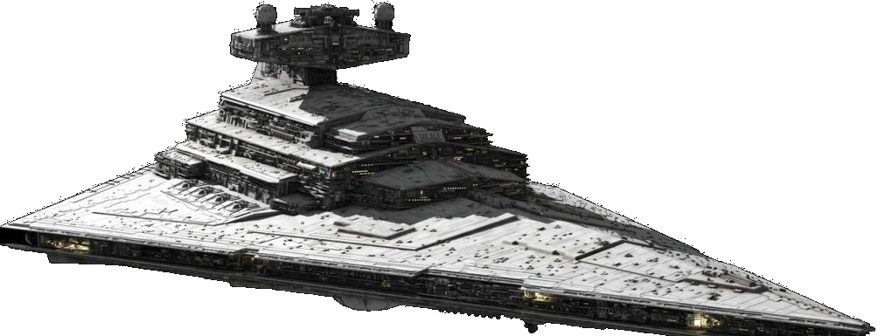
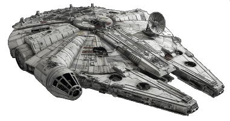
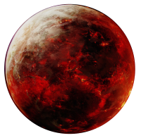
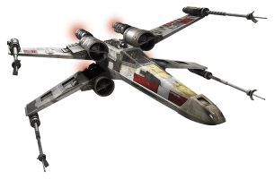
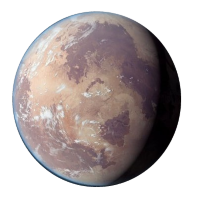

<!--
  Generated template for the GalaxyPage page.

  See http://ionicframework.com/docs/components/#navigation for more info on
  Ionic pages and navigation.
-->
<body>
  <ion-content padding id="galaxy">
      
      
      
      
      
      
      
      

      <div class="speech-bubble">
        <p id="speech1"> Hello</p>
      </div>
      
  </ion-content>
</body>
